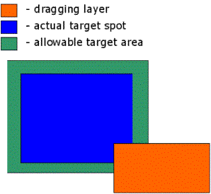

Doğru yanıtı fareyle tutup boşluğa taşıyın
Aşağıda hedef ve katmanı gösteren bir çizim vardır. Burada katmanın hedef üstünde olup olmadığı kodlarda gösterilmiştir.

Bu kodu çalışırken izledikten sonra ilgileneceğimiz bir konu daha kaldı: O da filitreler. Filitreler IE 4 teknolojisi zamanından kalmadır ama bazı koşullarda çok da etkin kullanılabilir. Yalnız tarayıcı bağımsız kodlamadan söz etmek en iyisidir ama burada bir ayrıcalık yapacağız. Filitreler konusunda aşağıdaki bağları incelemenizde yarar vardır: